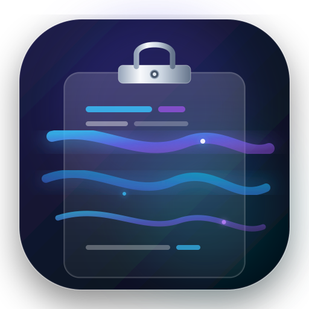
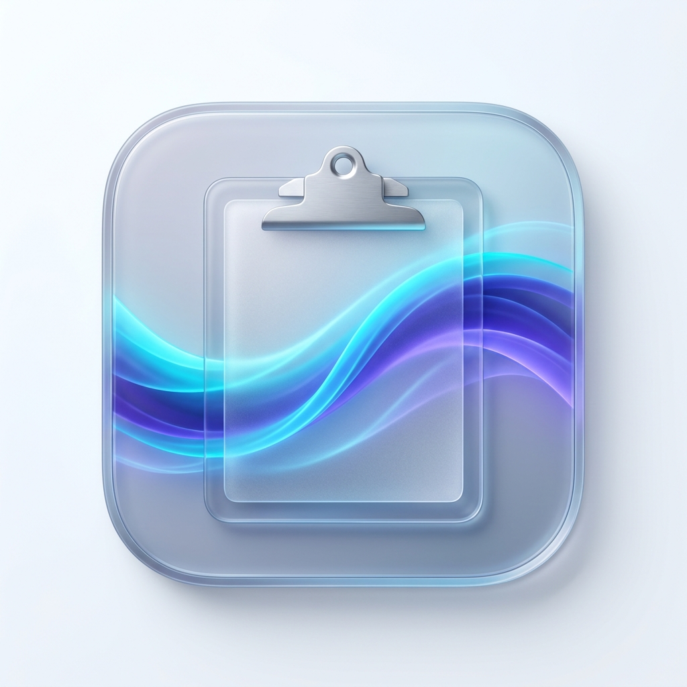

ClipstreamClipstream lives unobtrusively in your menu bar and summons instantly at your fingertips with a 120Hz ProMotion HUD. Strictly keyboard-first, intelligent syntax auto-detection, and zero bloat.
brew install --cask clipstream
Zero background baggage. Every pixel and millisecond is optimized to match official Apple system utilities.
Built 100% in pure Swift, SwiftUI, and AppKit. No Electron, no Chromium overhead. Idle CPU usage stays strictly under 0.1% with instantaneous responsiveness.
Automatically classifies clipboard items into Code, Web Links, Hex/RGB Colors, and Rich Text with syntax highlighting, line gutter numbers, and metadata badges.
Concealed passwords copied from 1Password, Bitwarden, or Apple Keychain are automatically filtered out. All clipboard history stays 100% local on your Mac.
Every action can be triggered without lifting your hands off the keyboard: instant 1–9 paste numbers, J/K arrow traversal, Cmd + P pinning, and auto-paste simulation.
Uses native macOS NSVisualEffectView with .behindWindow blending and .hudWindow material. Continuous curvature 18pt corners seamlessly match macOS Sonoma & Sequoia.
Modern SwiftData backing store preserves your pinned and unpinned clips with configurable history limits and sub-millisecond retrieval speeds.
Operate your entire clipboard history at lightning speed without touching the trackpad.
| ⌘ ⇧ V | Toggle Clipstream HUD | Global hotkey summons or dismisses the floating window anywhere on macOS. |
| ↑ ↓ or J K | Navigate History Items | Seamlessly traverses clips with instantaneous 150ms crossfade preview in the inspector. |
| 1 through 9 | Instant Quick Paste | Directly pastes any of the first nine items into your active application. |
| ↩ Return | Paste into Active App | Copies selection and sends synthetic Command+V event via Accessibility CGEvent. |
| ⌘ C | Copy Without Pasting | Refreshes system pasteboard with the selected snippet without closing the window. |
| ⌘ P | Pin / Unpin Snippet | Pins important tokens, commands, or URLs permanently to the top of the list. |
| ⌘ ⌫ | Delete Selected Clip | Removes snippet from SwiftData history storage. |
| Esc | Dismiss Window | Instantly hides Clipstream HUD and restores focus to your previous workflow. |

Compatible with macOS 14 Sonoma and macOS 15 Sequoia. Built natively as a Universal Binary for Apple Silicon (M1/M2/M3/M4) and Intel.